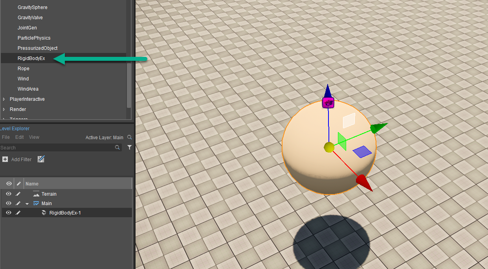
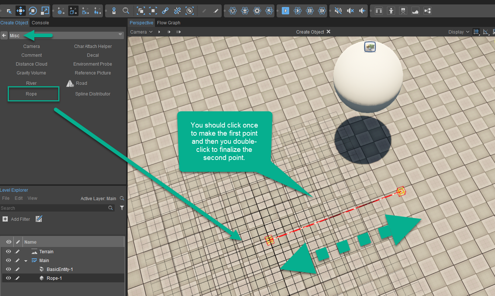
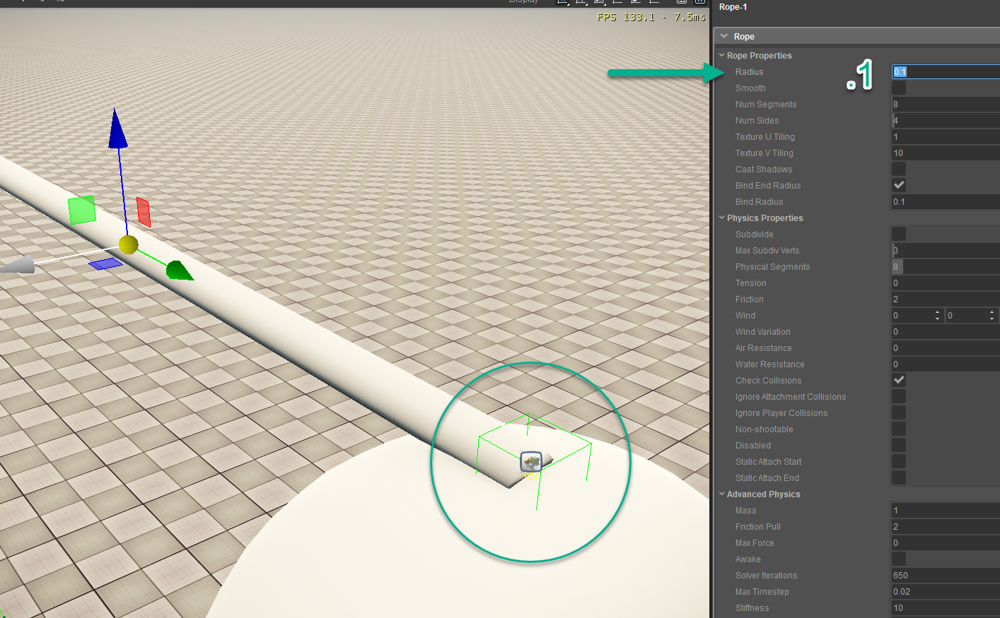
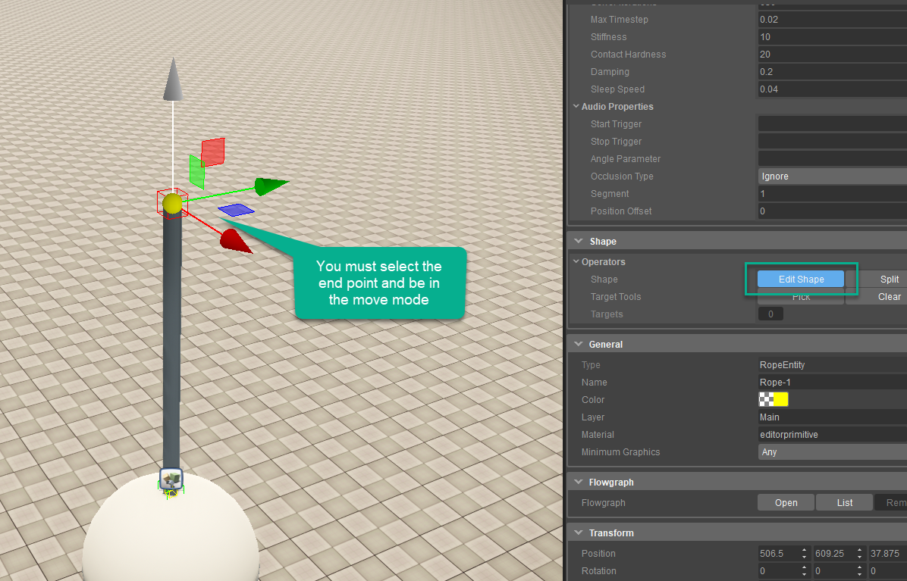
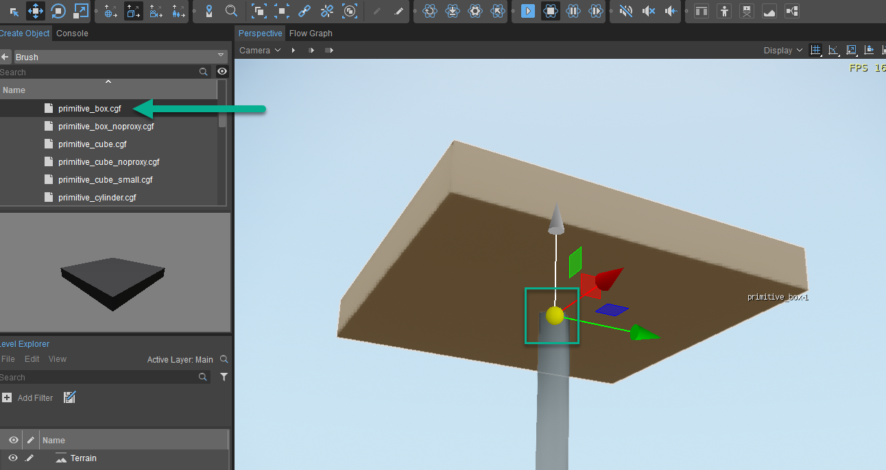
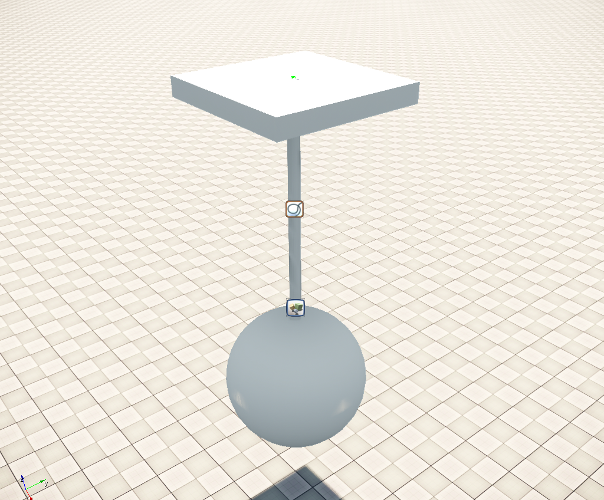

Каковы некоторые случаи использования веревки?
Что-то общее в игровом процессе — это необходимость подвешивать объект на кабеле, чтобы создать элемент внутри сцены. Эти предметы могут варьироваться от люстр до колоколов и должны не только правильно вести себя на кабеле, но и точно удерживать объект на кончике и выдерживать серьезные физические нарушения, когда в них стреляют или их нужно полностью отломать.
Для этой разбивки мы будем использовать объект Rope, а также сферу RigidBody, а затем прикрепим веревку к потолку, который будет объектом static. Это должно охватывать довольно большое количество вариантов использования и дать общее представление о рабочем процессе при взаимодействии с сущностью Rope.
Создание нашей веревки
Следуйте инструкциям ниже, чтобы создать веревку, на которой будет свисать мяч:
- Перейти к Создать объект -> Устаревшие объекты -> Физика -> RigidBodyEx и перетащите его на свою сцену.
- Выберите объект Spawnpoint, перейдите в Flow Graph, убедитесь, что flowQuickStart график открыт и нажмите RMB чтобы Добавить выбранный объект для добавления точки появления со своими свойствами.
- В этой части мы будем взаимодействовать с концами веревки, чтобы мы могли переместить другую точку над мячом.
Для редактирования нажмите Редактировать фигуру в Свойства панель и используйте Переместить инструмент (1 Key), чтобы переместить точку на место, как показано ниже. - Возьмите примитивную коробку из Создать объект -> Кисть -> По умолчанию. Убедитесь, что вы DO NOT установили флажок без прокси. При размещении над верхней точкой веревки должен появиться зеленый прямоугольник, когда физика активна.
- Наконец-то вы можете приступить к игре (Ctrl+Г) и выстрелите в сферу, чтобы увидеть, что веревка будет удерживаться и летать в воздухе, пока не остановится естественным путем.
Шаг 1

Шаг 2

Шаг 2

Шаг 3-1

Шаг 4

Шаг 5
